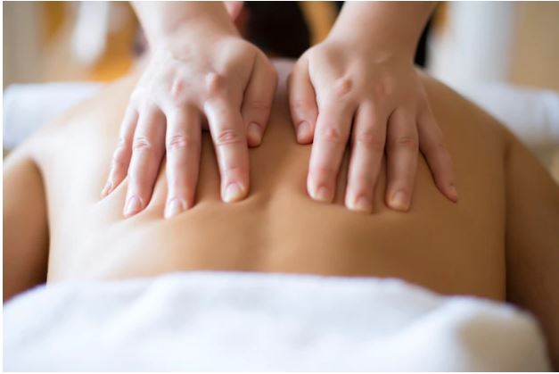

Masajes Descontracturantes
Masajes Linfáticos
Mejora el funcionamiento del sistema linfático ayudando a aliviar la sensación de piernas hinchadas y pesadas. Altamente recomendado para personas que padecen retardo circulatorio, que trabajan muchas horas parados o sentados y también para las que sienten una sensación de piernas cansadas. Recupera la correcta actividad del sistema linfático, favorece la eliminación de líquidos y toxinas.